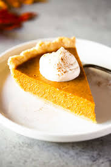

Pumpkin Pie Recipe

Description
Pumpkin pie is a traditional dessert made with
a warm spiced pumpkin custard filling and flaky
pie crust. It's usually served (with a good
fluff of whipped cream) during the fall harvest
holidays like Thanksgiving when pumpkins and
gourds are in season.
Ingredients
- Pie Crust
- Pumpkin Puree
- Sweetened Condensed Milk
- Eggs
- Pumpkin Pie Spice
Steps
- Mix up the filling and pour it into the pie crust.
- Bake at 425 degrees F for about 15 minutes, then at 350 degrees F until the filling is set.
Home